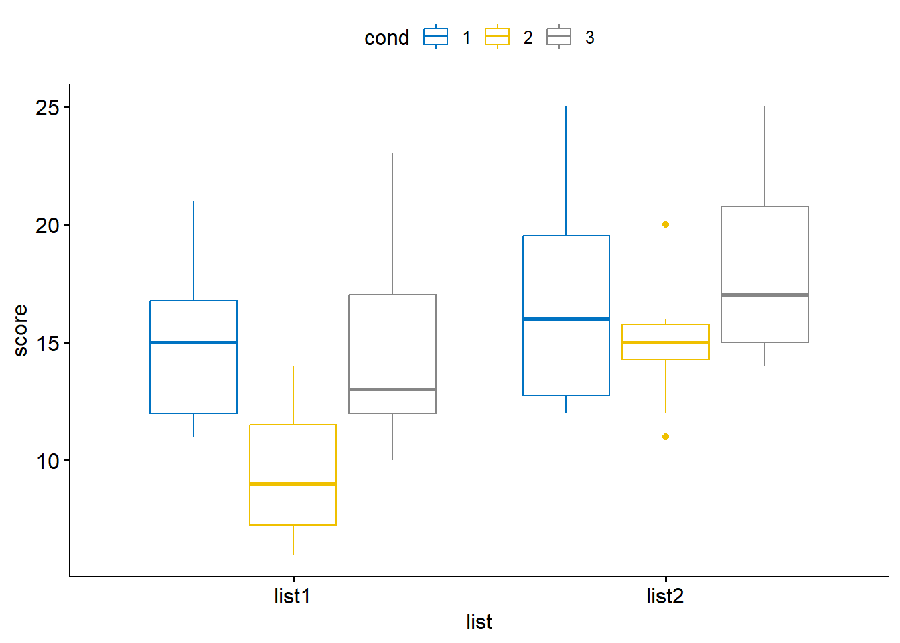

A researcher is interested in how memory for a list of words can be influenced by instructions on how to process the words. She assigns participants to one of three instruction conditions (COND): no instructions (coded as 1), rote memorization (told to just rehearse each word, coded as 2), and image (told to form an image for each word, coded as 3). Participants are presented with a list of 30 words and the researcher records the number out of 30 words that each participant recalls correctly. Because she is interested in practice effects, she presents each subject with two lists, one after another, and records performance on each list (LIST1 and LIST2).
First, I will read in the data and check the data type (i.e., is the data wide or long?).
#Need to convert data set to long format - it is currently in wide format#Changing data to long format - we want to gather by list as this is the repeated variableDataLong <- Data %>%gather(key ="list", value ="score", list1, list2)DataLong$list <-as.factor(DataLong$list)DataLong$cond <-as.factor(DataLong$cond)DataLong$subjid <-as.factor(DataLong$subjid)head(DataLong)
We have a balanced design. Now let’s analyze the data. We are interested in how memory for a list of words can be influenced by instructions on how to process the words.
library(rstatix)Repeated <-ezANOVA(DataLong, dv = score, wid = subjid, within = list, between = cond, detailed =TRUE, return_aov =TRUE, type =3)Repeated
$ANOVA
Effect DFn DFd SSn SSd F p p<.05
1 (Intercept) 1 27 13053.75000 584.35 603.150937 5.272153e-20 *
2 cond 2 27 206.40000 584.35 4.768375 1.684833e-02 *
3 list 1 27 198.01667 73.95 72.298174 4.077683e-09 *
4 cond:list 2 27 32.53333 73.95 5.939148 7.283889e-03 *
ges
1 0.95199113
2 0.23869550
3 0.23124234
4 0.04709288
$aov
Call:
aov(formula = formula(aov_formula), data = data)
Grand Mean: 14.75
Stratum 1: subjid
Terms:
cond Residuals
Sum of Squares 206.40 584.35
Deg. of Freedom 2 27
Residual standard error: 4.65216
2 out of 4 effects not estimable
Estimated effects may be unbalanced
Stratum 2: subjid:list
Terms:
list cond:list Residuals
Sum of Squares 198.01667 32.53333 73.95000
Deg. of Freedom 1 2 27
Residual standard error: 1.654959
Estimated effects may be unbalanced
#Additional ways to estimate this modelModel <-aov(score ~ list*cond +Error(subjid/list), DataLong)#summary(Model)#SphereCorr <- anova_test(DataLong, dv = score, wid = subjid, within = list, between = cond)#SphereCorrlibrary(ggpubr)bxp <-ggboxplot(DataLong, x ="list", y ="score",color ="cond", palette ="jco")bxp

Since the interaction term is significant, F(2,27) = 5.94, p = .047, that means that values in one factor depend, in part, on the values in the other factor so we must look at pairwise comparisons (simple effects and simple effects comparison). As denoted in the figure and output, there are some significant mean memory score differences between list 1 and list 2 of words for each condition.
Marginal Means
Let’s directly calculate these means and the marginal means to aid in our interpretation of this data.
library(emmeans)#the pairs function comes from the emmeans package - verbiage should feel similar to emmeans commands in SPSSSimpleCond <-emmeans(Model, pairwise ~ cond, adjust ="bonferroni")SimpleCond
$emmeans
cond emmean SE df lower.CL upper.CL
1 15.8 1.04 27 13.6 17.9
2 12.2 1.04 27 10.0 14.3
3 16.4 1.04 27 14.2 18.5
Results are averaged over the levels of: list
Warning: EMMs are biased unless design is perfectly balanced
Confidence level used: 0.95
$contrasts
contrast estimate SE df t.ratio p.value
cond1 - cond2 3.6 1.47 27 2.447 0.0636
cond1 - cond3 -0.6 1.47 27 -0.408 1.0000
cond2 - cond3 -4.2 1.47 27 -2.855 0.0245
Results are averaged over the levels of: list
P value adjustment: bonferroni method for 3 tests
$emmeans
list emmean SE df lower.CL upper.CL
list1 12.9 0.637 33.7 11.6 14.2
list2 16.6 0.637 33.7 15.3 17.9
Results are averaged over the levels of: cond
Warning: EMMs are biased unless design is perfectly balanced
Confidence level used: 0.95
$contrasts
contrast estimate SE df t.ratio p.value
list1 - list2 -3.63 0.427 27 -8.503 <.0001
Results are averaged over the levels of: cond
Solution
Let’s interpret a few of these results. Across lists, participants told to form an image of the words in the mind recalled significantly greater words (M = 16.4) than those who practice rote memorization of the words (M = 12.2), t(27) = -2.86, p = 03. Additionally, the practice effect has strongest for participants in the rote memory condition as more words were recalled in the second list (M = 14.9) as compared to the first list (M = 9.4), t(27) = -7.43, p <.001. In other words, participants recalled more words overall when asked to assign an image to each word, however, they learned the best (i.e., the practice effect was the strongest) when they were asked to recall words via rote memory.